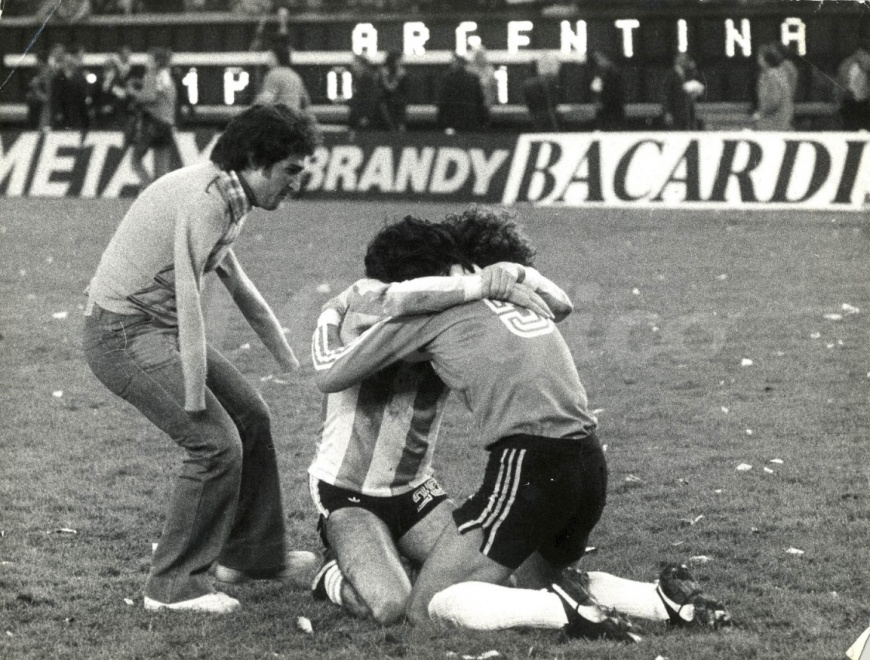
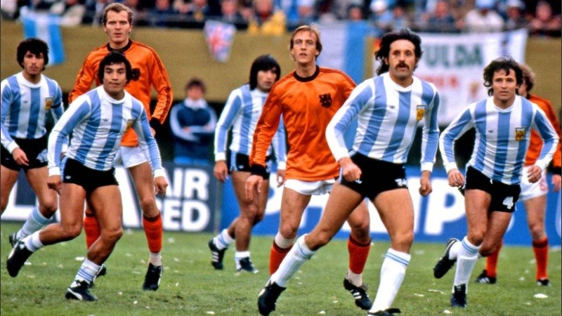

EL ABRAZO DEL ALMA
Final del partido!! El abrazo entre el pato Fillol y el conejo Tarantini y este espectador que da un marco de gran emocion a la foto.
Partidos disputados por Argentina
PRIMERA RUEDA
- Argentina 2 - Francia 1
- Argentina 2 - Hungria 1
- Argentina 0- Italia 1
SEGUNDA RONDA
- Argentina 2 - Polonia 0
- Argentina 0 - Brasil 0
- Argentina 6 - Peru 0
FINAL
Argentina 3 - Holanda 1
GOLEADORES DE LA COPA MUNDIAL 1978
| JUGADOR | GOLES CONVERTIDOS | SELECCION |
|---|---|---|
| Mario Kempes | 6 | Argentina |
| Teofilo Cubillas | 5 | Peru |
| Rob Resenbrik | 5 | Holanda |
| Hank Krankl | 4 | Austria |
| Leopoldo Luque | 4 | Argentina |